Partie mécanique - Système de convoyeur
1. Étude de conception mécanique(Analyse fonctionnelle)
L’analyse fonctionnelle est une démarche essentielle dans la conception d’un système technique. Elle vise à identifier, comprendre et formaliser les besoins réels des utilisateurs ainsi que les fonctions que le système doit remplir pour y répondre. Dans le cadre de ce projet, qui consiste à développer un système de convoyeur intelligent pour le tri de déchets(considérés ici comme des objets colorés), l’analyse fonctionnelle permettra de structurer la réflexion en distinguant les fonctions principales, les contraintes techniques, et les interactions entre les différents composants.
a. Analyse de besoin:
La bête à cornes est un diagramme représenté sous forme de graphique. Il permet de savoir si un produit ou un service répond aux besoins des utilisateurs. Elle est appelée bête à corne, car elle ressemble à une tête de taureau avec la ligne reliant les deux boules en haut du diagramme. Pour débuter, nous allons commencer par faire une analyse de besoin en utilisant ce diagramme de bête à corne qui va nous permettre de répondre aux trois questions suivantes:
- Qui utilise le système ?
- Sur quoi agit-il ?
- Dans quel but ?
b. Énoncé du besoin
Notre système de convoyeur rend service à une entreprise de recyclage dans la zone industrielle de TECHBOT CITY en permettant de trier automatiquement des déchets en fonction de leurs couleurs afin de faciliter la collecte.
c. Analyse fonctionnelle du besoin (AFB)
Une analyse fonctionnelle de besoin se concentre sur l'identification de deux types principaux de fonctions: les fonctions principales et les fonctions contraintes. Les fonctions principales décrivent ce que le produit ou système doit faire pour satisfaire le besoin de l'utilisateur, tandis que les fonctions contraintes définissent les limites ou les conditions dans lesquelles ces fonctions principales doivent être réalisées.
Fonctions principales:
- Elles sont la raison d'être du produit ou du système.
- Elles répondent directement au besoin de l'utilisateur.
- Elles peuvent être décomposées en fonctions élémentaires pour une analyse plus détaillée.
Fonctions contraintes
- Elles limitent les choix du concepteur et du produit.
- Elles peuvent être liées à la sécurité, l'environnement, l'ergonomie, etc.
- Exemple: "Être compatible avec les normes de sécurité" pour une voiture.
En plus de ces fonctions principales et les fonctions de contraintes, nous allons ajouter et détailler des fonctions de services pour mieux satisfaire les besoins de l’entreprise de faire le système de tri avec le convoyeur.
En résumé, l'analyse fonctionnelle de besoin vise à identifier et à caractériser ces deux types de fonctions afin de bien comprendre les exigences du produit et de garantir sa pertinence par rapport au besoin initial.
Pour bien étudier notre système et pour définir les fonctions principales et les fonctions de contraintes, nous allons utiliser le diagramme de pieuvre.
Diagramme de pieuvre:
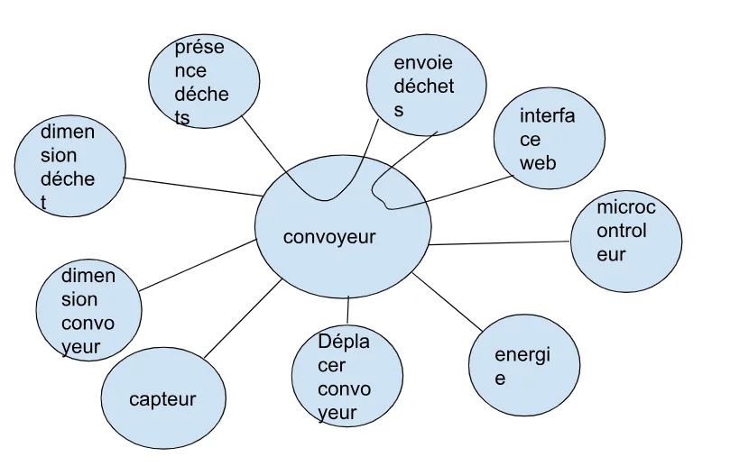| FP1 | transférer les déchets |
| FP2 | trier les déchets |
| FP3 | interface web pour affichage |
| FC1 | utiliser l'arduino nano |
| FC2 | alimentation batterie lithium |
| FC3 | le convoyeur ne doit fonctionner que si un déchet est présent |
| FC4 | le capteur de présence(Ultrason) |
| FC5 |
dimension:
|
| FC6 | les déchets sous formes de cubes de 30 mm |
| FS1 | détecter la présence d'un déchet |
| FS2 | identifier la couleur du déchet |
| FS3 | déplacer le tapis du convoyeur |
| FS4 | afficher les statistiques de tri en temps réel sur une interface web |
| FS5 | indiquer à l'utilisateur dans quelle benne placer le déchet |
d. Diagramme FAST
Le diagramme FAST (Function Analysis System Technique) est la représentation visuelle d'un produit ou d’un système et de toutes ses fonctions. Ce diagramme est un outil utilisé par les entreprises pour obtenir une vision globale d'un produit existant ou en cours de création. Il représente schématiquement toutes les fonctions de l'article et la manière dont il les met en œuvre.
À quoi sert le diagramme FAST ?
Il répond à trois grandes questions pour chaque fonction :
- Pourquoi ?
- Comment ?
- Quand ?
Il représente graphiquement les relations entre les fonctions principales (FP) et les fonctions de service (FS)
e. Conclusion générale de l’analyse fonctionnelle
L’analyse fonctionnelle a permis d’identifier clairement les fonctions principales du système de convoyeur : trier automatiquement les déchets selon leur couleur. Pour répondre efficacement à ce besoin, plusieurs fonctions de service ont été définies, telles que la détection de présence, l’identification de couleur, le déplacement du tapis et l’affichage des statistiques en temps réel.
Les fonctions contraintes imposées par le cahier des charges (composants à utiliser, dimensions, alimentation etc.) ont été intégrées dans la conception dès les premières étapes
Cette analyse permet ainsi de poser une base solide pour la phase de conception et garantit que le système répondra aux attentes techniques, fonctionnelles et ergonomiques de l’entreprise utilisatrice.
2. Choix des composants mécaniques
Ayant déjà du bois comme matière première, nous avons décidé de l’utiliser, ainsi que d’autres composants déjà en notre possession tels que le tapis et les roulements.
Voici donc le tableau récapitulatif des composants utilisés et de leur rôle :
| Composants | Matériaux |
|---|---|
| Parois latérales | Bois |
| Tapis | Textile |
| Roulements | Acier |
| Tambours | Plastique |
| Supports des tambours | Plastique |
| Supports des composants électroniques | Plastique |
3. Modélisation CAO (SolidWorks)
Nous avons conçu les différentes pièces puis avons assemblé sur SolidWorks en respectant les dimensions du cahier de charge.
a. Parois latérales
Il s'agit de la structure principale du convoyeur.
b. Tapis
Il s'agit de la structure principale du convoyeur.
c. Roulements
Il s'agit de la structure principale du convoyeur.
Interieur du roulement:
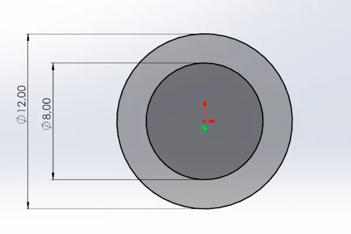 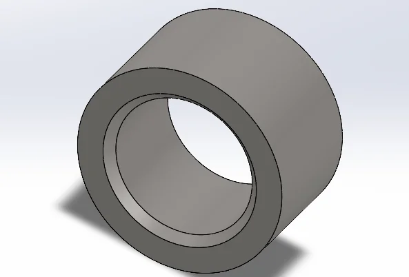Exterieur du roulement:
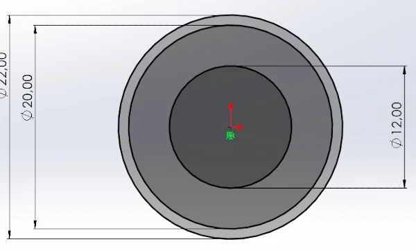 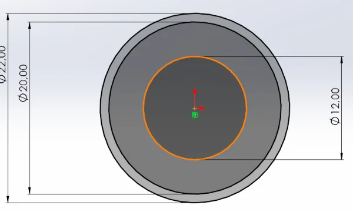 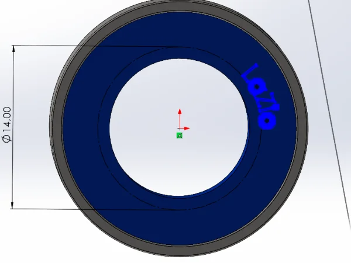Le roulement assemblé:
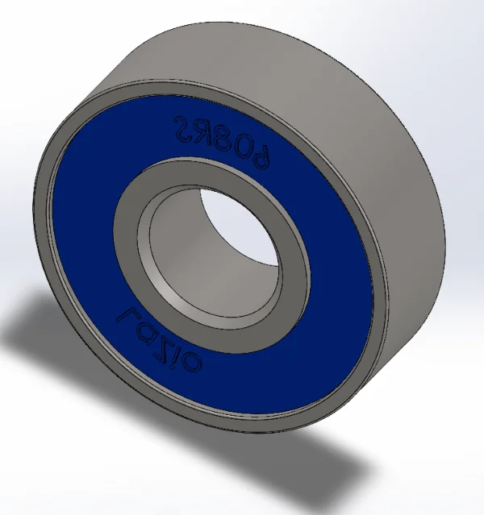télécharger les fichiers du roulement
d. Tambours
Les deux tambours entrainent le tapis en rotation. L'un des tambours est connecté au moteur.
Tambour connecté au moteur
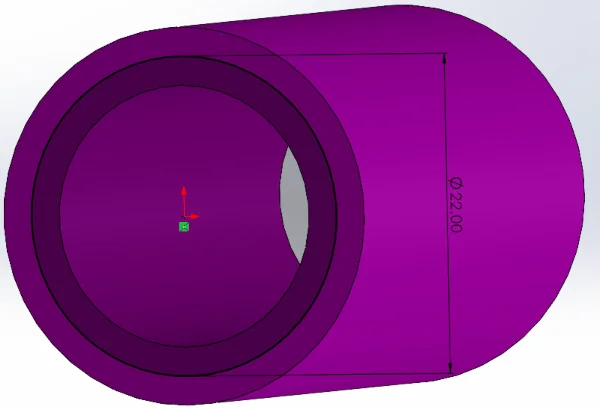 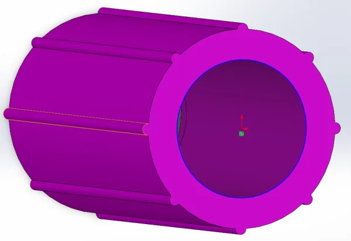 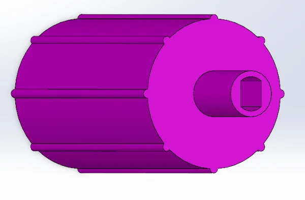 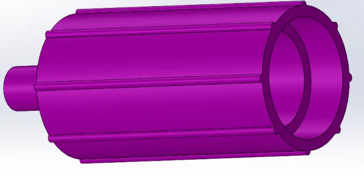Tambour libre
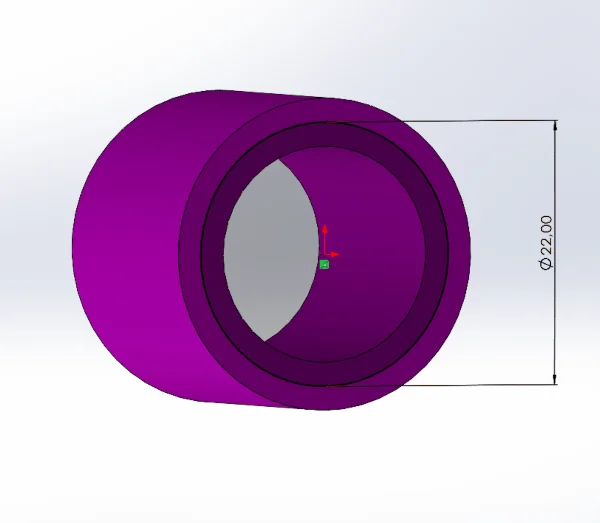 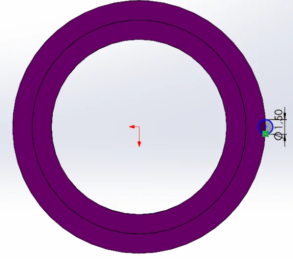 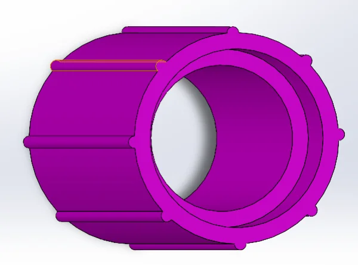e. Supports des tambours
Ils permettent de relier les parois, les roulement et les tambours.
 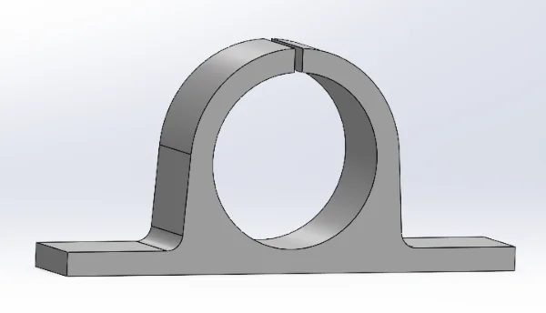
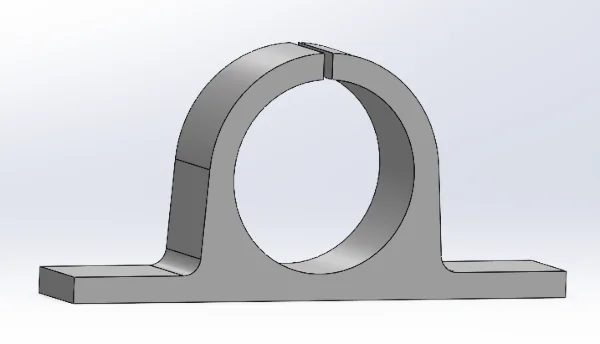
Support des tambours libres
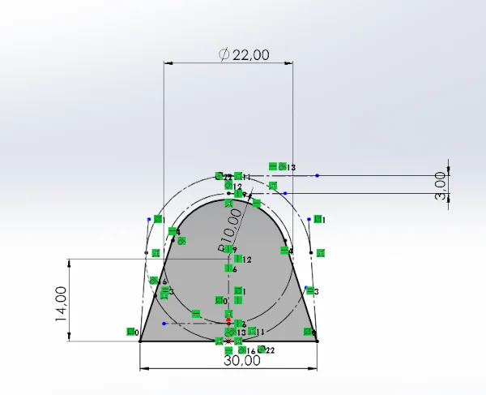 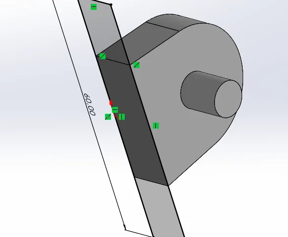 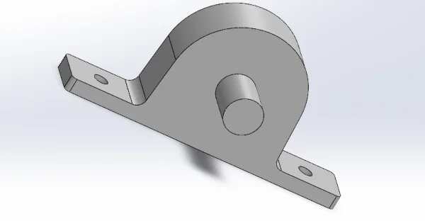f. Supports des composants électroniques et autres
Ils permettent de supporter et de fixer les composants électroniques.
 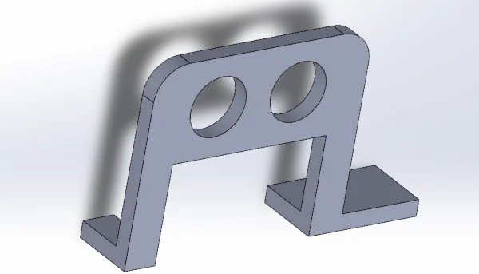
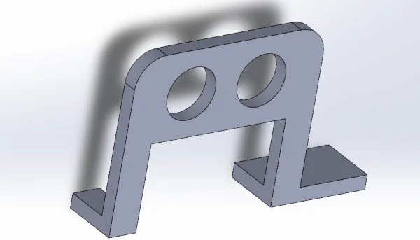
Support du capteur de couleur, de la led RGB et des boutons poussoirs
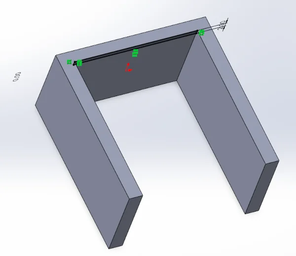 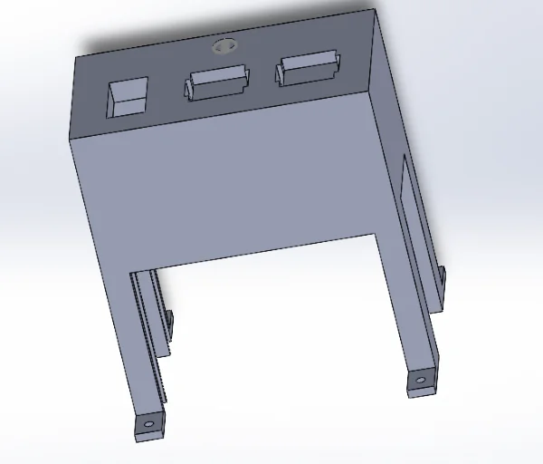 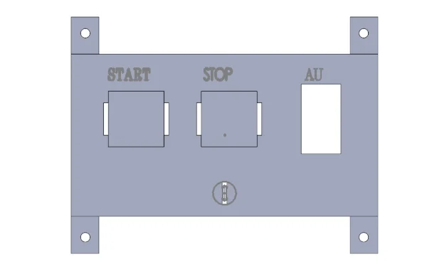télécharger le support du capteur de couleur et des boutons poussoirs
Support du capteur infrarouge
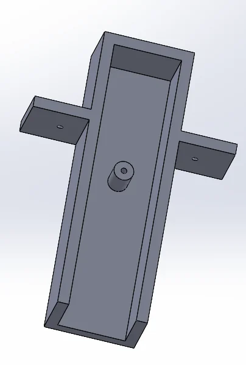Un support au milieu du convoyeur pour le circuit
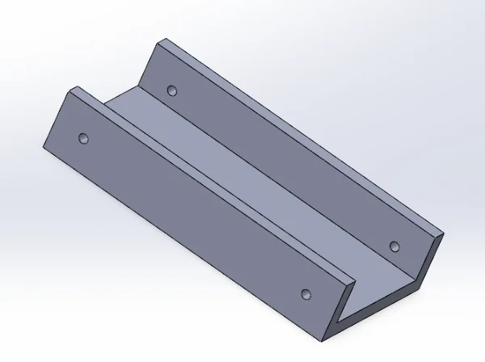Deux supports aux extrémités pour fixer le convoyeur au sol
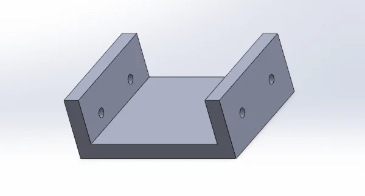g. Moteur DC
Il s'agit de la structure principale du convoyeur.

h. Le convoyeur assemblé
A partir de ces pièces, nous avons assemblé le convoyeur.
Télécharger l'ensemble(pièces et assemblages) ici
4. Réalisation
Les pièces en plastique nécessaires au montage ont été modélisées puis imprimées à l’aide d’une imprimante 3D.
Le bois a été découpé en respectant les dimensions définies sur SolidWorks, garantissant une structure précise. Pour la fabrication du tapis roulant, un textile utilisé habituellement pour les sacs a été choisi, assurant une bonne résistance.
Cette méthode a permis d’obtenir des composants parfaitement adaptés au système. L'ensemble a été assemblé avec soin pour assurer la stabilité et la fonctionnalité du convoyeur.